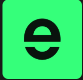

Tings
What is Tings?
Tings is a perpetual futures DEX that uses HIP-3 protocol to make markets for assets that have never had them before.
Prices of GPUs, unemployment rates, weather indexes, US debt levels, collectibles like $CHARIZARD or $ROLEX—things that people keep
an eye on but can’t trade.
Tings makes those underlying assets tradable perp contracts on-chain.
Since February 2026, the platform has been in testnet. There are already live markets and a points programs.
but no information about public funding has been made public. If you’re farming Hyperliquid airdrops ,
Tings is a bet that makes sense to keep an eye on.
Tings
Airdrop Details
There has been no official announcement of a token launch or airdrop, so participation is still speculative.
Tings does have a structured points program, though, and 20% of all points are set aside for testnet activity.
Points are given out every week (300,000 points per week) based on real trading activity and realized PnL.
The exact formula is secret, but it’s clear that the focus is on real activity instead of fake volume.
Key Parameters:
Distribution Method: 300,000 points distributed weekly based on trading activity and realized PnL
TGE Date: Not announced
The referral program is also active. You get 10% of the points and trading fees of the people you refer.
Users who are referred get 10% off their fees.
How to Participate in the Tings Airdrop
Step 1: Visit the Tings Testnet
Head to the Tings platform, click Connect Wallet in the top right, approve the signature, and accept the Terms & Conditions.
Step 2: Get Testnet Tokens
Testnet tokens are free for Hyperliquid mainnet users who meet either threshold:
$10,000+ in perpetuals trading volume, or
$1,000+ in spot volume
If you don’t qualify, you can mint testnet tokens in-app for $1 USDC. If you don’t have any USDC, you can get them on Binance.
Step 3: Choose a Market and Trade
Look through the live exotic markets for GPUs, weather indices, collectibles, macro data, and more, and then open a position.
If you want to buy something right away, use a market order.
If you want to buy something at a certain price, set a limit order.
Weekly points are based on trading activity and realized PnL, so it’s more important to participate consistently
over several weeks than to have one big session.
Step 4: Generate and Share Your PnL Card
After you trade, make your PnL card on the platform and post it on X.
This gives you a flat 100 points per share, which is one of the easiest ways to get points and takes less than a minute.
Step 5: Submit Feedback and Report Bugs
You can use the app’s feedback tool to report bugs or give your thoughts on the product.
Bug reports get more points and are less competitive than trading volume. During testnet,
teams put a lot of weight on this kind of feedback.
Step 6: Create Your Referral Link
To make your referral link, open the app and go to the Referrals page.
You get 10% of the fees and points from every person who trades through it,
and this will continue throughout the testnet phase.
Step 7: Join the Discord and Claim the OG Role
Get the OG role on the Tings Discord while you can. In the past,
being involved in the community early on has been important for being eligible for
snapshots in Hyperliquid-ecosystem projects.
Frequently Asked Questions
Has Tings Confirmed an Airdrop or Token Launch?
No. Tings has not yet announced a token or airdrop as of April 2026.
The points program is live, and 20% of the points are set aside for testnet users.
However, it is not yet clear if those points will turn into tokens.
Is the Tings Testnet Free to Use?
Mostly. People who use Hyperliquid mainnet and have $10,000 or more in perps
volume or $1,000 or more in spot volume can get free testnet tokens. You can also mint them
for $1 USDC as a way to stop sybil attacks.
How Are Tings Points Calculated?
Tings gives out 300,000 points each week based on how much trading activity and realized PnL there is.
The exact formula is not public. The team has said they reward real trading behavior, so consistent activity
and real profits are more important than just the number of trades.
Conclusion
Tings is very different from most testnet projects. For example, trading perps on GPU prices or collectibles isn’t
something you see every day. Points are real, the referral program grows quickly, and 20% of the total pool is set aside
for people who are testing the net.
Start trading, share your PnL card, build your referral network, and don’t forget to check Discord.
You're interested in more projects that do not have any token yet and could potentially airdrop a governance token to early
users in the future? Then check out our list of potential retroactive airdrops to not miss out on the next DeFi airdrop!
Don't forget to follow us on Twitter, Telegram, & Facebook and subscribe our newsletter to receive new airdrops!

What is Cesto?
Cesto is the first vibe investing platform on Solana, letting users invest in
thematic baskets of tokenized assets
— stocks, crypto, and real-world assets (RWAs). Think “War Mode” defense stocks
or crypto narrative plays,
packaged into a single one-click position sent straight to your wallet.
The core idea is self-custodial, diversified investing without the friction. No manual
rebalancing across a dozen protocols, no centralized custody. Cesto handles automatic
rebalancing while you keep control of your assets. The app went live on March 31, 2026,
with a curated set of baskets available from day one.
Cesto also won the Solana Demo Day competition and received a grant from Superteam UAE.
Cesto Airdrop Details
Cesto team has explicitly said “no token, only love,” and there is no announced airdrop.
That said, the platform runs an active points campaign — a structure that frequently
precedes token launches and retroactive distributions. Participating now may matter if that changes.
Key Parameters:
Allocation: TBA
Distribution Method: Points — earned via basket holdings, time-held bonus, social tasks,
and basket-specific multipliers
Points accumulate based on the value you hold in baskets and how long you hold it. Certain
baskets carry multipliers that boost your rate. Social tasks — connecting X, sharing your
portfolio or strategy, giving Cesto a shoutout — add to your total as well.
to Participate in the Cesto Points Campaign
Step 1: Visit the Cesto website
Go to the Cesto website and click “Connect Wallet” in the top right corner.
Approve the connection request in your wallet.
Step 2: Get SOL
You’ll need SOL to fund your basket investments and cover transaction fees.
If you don’t have any, get them from Binance and transfer it to your wallet.
Step 3: Browse and Invest in Thematic Baskets
Look through the baskets that are available and choose one that fits your style.
Click through to see what’s inside, then invest with just one click. Some baskets
have point multipliers, so you should check before you allocate.
Step 4: Connect Your X Account
In your profile or dashboard, link your X (Twitter) account. This unlocks the social
task portion of the points campaign.
Step 5: Complete Social Tasks on X
Complete the available social tasks to earn additional points:
Share your investment strategy on X
Share your portfolio performance on X
Give Cesto a shoutout on X, tagging their account
Step 6: Hold and Rebalance
Keep your positions open for a while. The time-held bonus rewards
people who are patient; the longer they hold, the more points they get.
You can also invite your friends to earn more points.
Frequently Asked Questions
Does Cesto Have a Token?
No, Cesto has made it clear that there is no token. There is a points campaign going on,
but there is no set date for the airdrop or TGE. No information has been given about future plans.
Is the Cesto Points Campaign Free to Join?
Social tasks don’t cost anything. To earn points through basket holdings,
you have to deposit SOL into the platform.
How Are Cesto Points Calculated?
Points are based on how much your basket holdings are worth, how long you’ve
had them (time bonus), which baskets you have (multipliers), and whether you’ve
finished the social tasks on X.
Conclusion
Cesto’s points campaign is easy: buy baskets, keep them, do the social tasks,
and get points. It’s not clear if those points will ever turn into tokens,
but the team has made it clear that there aren’t any tokens right now.
If you’re already interested in thematic investing on Solana, it doesn’t take
much more work to get involved.
You're interested in more projects that do not have any token yet and
could potentially airdrop a governance token to early users in the future?
Then check out our list of potential retroactive airdrops to not miss out on
the next DeFi airdrop!

Hyperliquid?
Hyperliquid is a purpose-built Layer 1 blockchain designed for high-performance
decentralized finance applications. The platform centers around the Hyperliquid DEX,
a fully on-chain orderbook perpetuals exchange that delivers centralized exchange speed
with decentralized security benefits. The ecosystem supports perpetual futures and spot
trading, featuring a native token standard and permissionless liquidity provision capabilities.
The platform operates using the HYPE token, which powers the entire ecosystem through staking,
governance, and fee mechanisms. Since its alpha launch in 2023, Hyperliquid has attracted
significant trading volume and user adoption, establishing itself as a leading DeFi platform
The platform’s architecture enables efficient trade execution while maintaining complete
decentralization, offering users both institutional-grade performance and self-custodial security.
Hyperliquid Season 2 Airdrop Details
While Hyperliquid completed its Genesis Event on November 29th, distributing HYPE tokens
to early users, Season 2 represents ongoing opportunities for new participants. The platform
has allocated 38.888% of the total HYPE supply specifically for future emissions and community
rewards, creating substantial potential for upcoming distributions.
A significant discovery reveals 428 million unclaimed HYPE tokens remain in the community
rewards wallet, indicating major future reward programs ahead. The platform has demonstrated
consistent reward distribution patterns through various mechanisms including trading incentives,
staking rewards, and ecosystem participation bonuses. With the launch of HyperEVM on February
18th and native staking capabilities since December 30th, 2024, multiple pathways exist for users
to position themselves for Season 2 rewards through active ecosystem engagement.
Latest Update: Hyperliquid have launched the pre-alpha phase of portfolio margin, which allows
users to supply USDC to earn yield on the Earn page and use HYPE as collateral for their trades.
how to Participate in Hyperliquid Season 2>
Getting Started with Hyperliquid
Create Your Account
Visit Hyperliquid and connect your wallet
This referral link provides an instant 4% discount on all trading fees
Complete the account setup process and accept terms of service
Fund Your Account
Get some USDC from Binance or Bridge from any chain to Arbitrum using Rhino Bridge
Deposit the bridged USDC into your Hyperliquid account
Spot Trading Strategy for Season 2
Spot trading remains one of the most direct ways to generate activity and potential rewards
on Hyperliquid.
Access Spot Markets
Navigate to “Trade” section
Click “Select instrument”
Choose “Spot” from the dropdown menu
Browse available trading pairs for opportunities
Focus on Strict List Tokens
Trade tokens from the strict list: HYPE, PURR, HFUN, CATBAL
Hold positions in these tokens to qualify for ecosystem project airdrops
Maintain active trading volume across multiple pairs
Perpetual Futures Trading
Perpetual futures trading generates significant platform activity and demonstrates advanced
user engagement.
Navigate to Futures Markets
Go to “Trade” section
Click “Select instrument”
Select “All Coins” for complete market access
Choose preferred trading pairs based on volume and volatility
Develop Trading Strategy
Start with smaller position sizes to understand platform mechanics
Maintain consistent trading activity across different market conditions
Utilize leverage responsibly based on your risk tolerance
Trade HIP-3 Markets
Trade HIP-3 markets (equities, commodities, indices, forex) from different providers such as trade.xyz, Felix, HyENA, and Ventuals
Go to Trade, then select the HIP-3 tab to see the available markets
Hyperliquid have also recently implemented HIP-3 growth mode: a fee reduction initiative designed to accelerate the growth of new markets on the platform
Taker fees have been reduced by 90% across new markets, dropping from 0.045% to 0.0045%-0.009%, representing a 5-10x reduction in trading costs
For aligned collateral assets such as USDH, fees are further reduced to a range of 0.0036% to 0.0081%
HYPE Token Staking for Maximum Rewards
Staking HYPE tokens provides multiple reward streams and ecosystem benefits, making it essential for Season 2 participation.
Acquire HYPE Tokens
Purchase HYPE from the Hyperliquid spot market
Consider dollar-cost averaging for larger positions
Monitor market conditions for optimal accumulation opportunities
Complete Staking Process
Navigate to “Staking” section
Transfer HYPE tokens from spot balance to staking balance
Click “Stake Tokens” and enter desired amount
Select HypurrCollective validator for additional benefits:
Earn Nansen points alongside staking rewards
Access to exclusive ecosystem airdrops
Track record of 5 successful airdrops since staking launch
Understand Staking Rewards
Receive HYPE token rewards from network inflation
Earn USDC rewards from generated platform fees
Qualify for ecosystem project airdrops
Participate in governance decisions affecting the platform
HyperEVM Network Participation
The HyperEVM network launched on February 18th represents a major expansion opportunity for Season 2 participants.
Bridge to HyperEVM
Acquire minimum 5 HYPE tokens from spot market
Send tokens to HyperEVM via dedicated button. Alternatively, use the official HyperEVM bridge by HyperDash
Monitor for successful completion
Add HyperEVM Network
Configure wallet automatically here or manually with these network settings:
Network Name: Hyperliquid
RPC URL: https://rpc.hyperliquid.xyz/evm
Chain ID: 999
Currency Symbol: $HYPE
Explore HyperEVM Applications
HyperSwap: Decentralized exchange for token swapping
HyperBeat: Earn yield on various tokens
HyperLend: Borrow and lend assets
Hyperliquid Names & dotHype: ENS-style naming service
Many more on our Hyperliquid & HyperEVM archive
Generate Custom Strategies
Visit Hyperevm.farm for personalized farming strategies
Input your available capital for tailored recommendations
Apply filters for risk management:
Delta neutral strategies for price exposure protectiom
Low-risk only options for conservative approaches
Stables only strategies for minimal volatility
Purchase a Hypurr NFT
Visit OpenSea and search for the Hypurr NFT collection on the HyperEVM network
Purchase a Hypurr NFT using HYPE
Holding a Hypurr NFT may be a criteria for a round 2 HYPE airdrop and/or airdrops from HyperEVM projects
The terms from the Hyper Foundation website state that, “Hypurr NFTs may from time to time be associated wit
ertain benefits, features, or entitlements (“Utility”), but no Utility is promised or guaranteed under these terms.”
HyperLend have already confirmed a points boost for Hypurr NFT holders
Liquidity Provision Through HLP
The Hyperliquidity Provider (HLP) offers passive participation opportunities for users seeking steady returns.
Access HLP Vault
Navigate to “Vaults” section
Select “Hyperliquidity Provider”
Review current vault performance and fees
Make Strategic Deposits
Enter desired USDC deposit amount
Consider the 4-day lock period in your planning
Monitor vault performance metrics regularly
Reinvest earned rewards for compounding benefits
Building Your Referral Network
The referral program provides additional USDC rewards while contributing to platform growth.
Generate Referral Code
Navigate to “Referrals” section
Click “Create code” for your unique identifier
Customize code name for easy sharing
Share Strategically
Share with active crypto traders in your network
Explain the 4% fee discount benefit for new users
Focus on users likely to generate significant trading volume
Track referral performance through the dashboard
Supply USDC with New Earn Feature
Go to the Earn page
Supply USDC to earn yield
This update is part of the pre-alpha phase of portfolio margin on mainnet
Portfolio margin lets users trade spot and perps from the same account without selling their collateral
Currently, HYPE is the only collateral asset and USDC as the only borrowable asset
USDH will be added as borrowable, and BTC will be added as collateral in a future upgrade
Users can enable Portfolio Margin by clicking the “Classic” button on the Trade page on
desktop or the “Cross” button on mobile and going to the “Account Unification” tab
Tips for Maximizing Season 2 Rewards
Diversification Strategy
Spread your activities across multiple platform features to maximize exposure to
different reward mechanisms. Combine spot trading, perpetual futures, staking, and
HyperEVM participation for comprehensive ecosystem engagement.
Volume Generation
Maintain consistent trading activity rather than sporadic high-volume periods.
Regular engagement demonstrates genuine platform usage and increases chances of
reward qualification across different programs.
Ecosystem Token Holdings
Hold strict list tokens (HYPE, PURR, HFUN, CATBAL) in your spot wallet to
qualify for airdrops from new ecosystem projects. These holdings serve as
qualification criteria for many third-party distributions.
Validator Selection
Choose validators carefully for HYPE staking, considering factors like uptime,
commission rates, and additional benefits. HypurrCollective validator offers extra
rewards through ecosystem partnerships.
HyperEVM Early Adoption
Active participation in HyperEVM applications positions users for potential
“HyperEVM season” rewards as the network develops its own incentive programs.
Understanding Hyperliquid Staking Mechanisms
Staking Rewards Structure
HYPE staking launched on December 30, 2024, introducing multiple reward streams for participants.
Validators propose blocks proportional to their staked HYPE amounts, creating a proof-of-stake
consensus mechanism that rewards active participation.
Reward Types
Stakers receive HYPE token rewards from network inflation, USDC rewards
from trading fees generated on the platform, potential ecosystem airdrops from partner projects,
and possible allocations from new project launches within the ecosystem.
Validator Considerations
When selecting validators, evaluate uptime statistics, commission rates, community
reputation, and additional benefits offered. Some validators provide extra rewards
through partnerships or secondary airdrop opportunities.
HyperEVM Ecosystem Opportunitie
Strategic Participation
Engage with multiple HyperEVM applications to demonstrate broad ecosystem usage.
Focus on applications aligned with your risk tolerance and investment goals while
maintaining activity across different protocol types.
Future Development
Monitor announcements for new HyperEVM applications and incentive programs.
Early adoption of new protocols often provides enhanced reward opportunities
compared to later participation.
Frequently Asked Questions
When will Hyperliquid Season 2 officially launch?
While no official Season 2 announcement exists, the platform maintains active
reward distribution through various mechanisms. The 428 million unclaimed HYPE
tokens suggest significant future programs ahead.
How much HYPE should I stake for optimal rewards?
Staking amounts depend on individual circumstances, but maintaining at least a meaningful
position relative to your portfolio helps ensure reward qualification. Consider your risk
tolerance and lock-up period requirements.
Can new users still benefit from Hyperliquid rewards?
Yes, with 38.888% of HYPE supply reserved for future emissions, new users have substantial
opportunities for reward participation through active platform engagement.
What’s the minimum activity required for potential rewards?
While no official minimums exist, consistent activity across multiple
platform features (trading, staking, HyperEVM usage) demonstrates genuine ecosystem
participation and increases reward likelihood.
Are HyperEVM rewards separate from main platform rewards?
HyperEVM may develop its own incentive programs as the network matures. Participating in
both ecosystems provides exposure to multiple potential reward streams.
Conclusion
Hyperliquid Season 2 represents significant opportunities for both new and existing users
to participate in one of DeFi’s most promising ecosystems. With hundreds of millions of HYPE
tokens allocated for future rewards and multiple participation pathways available, users can
strategically position themselves across trading, staking, and HyperEVM activities.
Success in Hyperliquid Season 2 requires consistent ecosystem engagement rather than passive
holding. By combining spot trading, perpetual futures, HYPE staking, HyperEVM participation,
and referral program utilization, users maximize their exposure to various reward mechanisms
while contributing to platform growth and development.
Stay updated with official Hyperliquid communications for announcements about formal Season 2
launches, new application deployments, and additional reward program introductions as the
ecosystem continues expanding throughout 2026.
You're interested in more projects that do not have any token yet and could potentially airdrop
a governance token to early users in the future? Then check out our list of potential retroactive
airdrops to not miss out on the next DeFi airdrop!